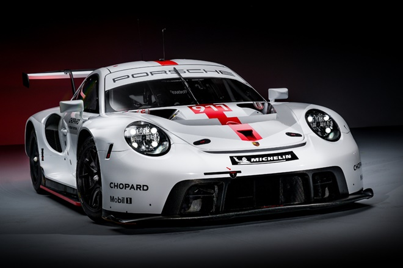

Trece victorias, treinta y cuatro podios, títulos en el Campeonato del Mundo de Resistencia FIA y en el campeonato IMSA WeatherTech, así como triunfos en las grandes clásicas de Le Mans, Sebring y Road Atlanta: este es el impresionante currículum del Porsche 911 RSR (2017) tras su 50ª y última prueba con el equipo oficial.El coche de competición con 510 caballos de la categoría GTE (EE. UU.: GTLM) pasa a formar parte de la historia de Porsche Motorsport como uno de los más exitosos. Su sucesor, que ya se ha estrenado en el Mundial de Resistencia en septiembre pasado, está esperando entre bastidores y se alineará en la parrilla por primera vez en Norteamérica a partir de enero de 2020.Cuando Porsche presentó el 911 RSR, basado en el deportivo de carretera 911 GT3 RS*, en otoño de 2016 en el Salón del Automóvil de Los Ángeles, los aficionados al automovilismo se quedan boquiabiertos. El fabricante de Stuttgart mostró un vehículo de carreras sin compromisos, alejado del concepto tradicional de motor trasero. "La colocación del motor delante del eje posterior creó espacio para el difusor trasero. Al mismo tiempo, se podría mejorar la distribución del peso. Estos factores no sólo hicieron que el coche fuera más rápido, sino que también ayudaron a optimizar el desgaste de los neumáticos", explica Pascal Zurlinden, Director del Equipo. "El nuevo concepto fue valiente y mereció la pena", afirma Fritz Enzinger, Vicepresidente de Porsche Motorsport.